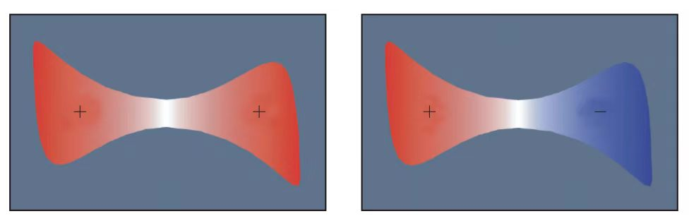
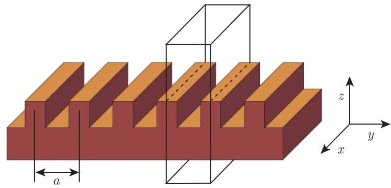

| 系统的对称性 | 连续平移对称性 |
| 离散平移对称性 | |
| 旋转对称性 | |
| 镜像对称性 | |
| 反演对称性 | |
| 时间反演对称性 |
若一个介质结构存在一定的对称性，那么这种对称性可以对该结构内电磁波的模式进行分类.
考虑在如图所示的金属腔中寻找一些可能存在的模.

该金属腔具有反演对称性，红色与蓝色分别表示场的正极与负极.
左图中，偶模占据了空腔；右图中，奇模占据了空腔.
由于金属腔的形状任意，很难写下其准确的边界，以及严格的解析解.
但是空腔具有这样的对称性：将腔体围绕其中心翻转，得到的腔体形状将保持不变.
因此，若以某种方法得到一个频率为\(\omega\)的特定模式分布\(\boldsymbol{H}(\boldsymbol{r})\)，那么\(\boldsymbol{H}(-\boldsymbol{r})\)一定也是频率为\(\omega\)的模式分布.
这个腔体无法分辨这两个模式，因为它无法分辨\(\boldsymbol{r}\)与\(-\boldsymbol{r}\).
由于同一频率的两个不同空间模式为简并态，因此，除非\(\boldsymbol{H}(\boldsymbol{r})\)为这些简并态中的一个模式，不然，若\(\boldsymbol{H}(\boldsymbol{r})\)与\(\boldsymbol{H}(-\boldsymbol{r})\)一定是同一个模式.
反正就是说要么二者是简并态，要么是同一模式.
这里往下都是在假设“非简并态.”
两个模式无非就是相差一个乘数因子：
$$\boldsymbol{H}(-\boldsymbol{r}) = \alpha\boldsymbol{H}(\boldsymbol{r})$$由于将系统翻转两次后会再次得到\(\boldsymbol{H}(\boldsymbol{r})\)，因此有：
$$\boldsymbol{H}(\boldsymbol{r}) = \alpha^2\boldsymbol{H}(\boldsymbol{r})$$ $$\therefore \alpha = 1~or-1$$一个特定的非简并模式一定是下面两种情况中的一种：
[注]这种二分法对于简并模式并非正确，但简并模式可以通过适当的线性组合来形成偶对称或奇对称的新模式.
根据系统内的电磁模式对系统某个对称运算的相应，我们将这些模式进行了分类.
通过这个例子，可以使用更抽象的语言得到一些本质的结论.
[设]\(I\)为一个运算符（\(3\times3\)的矩阵），\(a\)为一个向量（\(3\times1\)矩阵），有：
$$Ia = -a$$即\(I\)作用于\(a\)上可以使其反转.
为了反转一个向量场，可以使用算符\(\widehat{O}_I\)来反转向量\(\boldsymbol{f}\)及其自变量\(\boldsymbol{r}\)，即：
$$\widehat{O}_I\boldsymbol{f} = I\boldsymbol{f}(I\boldsymbol{r})$$一维：
$$f(r) = f(-r)$$二维：
$$f(x,y) = f(-x,-y)$$仅当上式成立时，系统才是反演对称的.
将对易式作用再系统内任一空间模式\(\boldsymbol{H}(\boldsymbol{r})\)上，可以得到：
该式说明，若\(\boldsymbol{H}\)是一个频率为\(\omega\)的谐波空间模式，那么\(\widehat{O}_I\boldsymbol{H}\)也是一个频率为\(\omega\)的空间模式.
若它们不为简并态，那么它们只能是频率为\(\omega\)的同一个模式，即，\(\boldsymbol{H}\)与\(\widehat{O}_I\boldsymbol{H}\)仅相差一个乘法因子：
$$\widehat{O}_I\boldsymbol{H} = \alpha\boldsymbol{H}$$但此方程的算符为\(\widehat{O}_I\)，而本征值已知，为\(\alpha=1\)或\(\alpha=-1\)。
因此，一个本征向量\(\boldsymbol{H}(\boldsymbol{r})\)经反演对称算符\(\widehat{O}_I\)运算后，就可以判断其为偶模（\(\boldsymbol{H}\rightarrow +\boldsymbol{H}\)）还是奇模（\(\boldsymbol{H}\rightarrow -\boldsymbol{H}\)）.
系统在某个特定方向上通过连续平移是不变的.
对于每一个\(\boldsymbol{d}\)，可以定义一个平移算符，其作用于函数\(f(\boldsymbol{r})\)上，可以使自变量偏移\(d\).
$$\widehat{T}_{\boldsymbol{d}}f(\boldsymbol{r}) = f(\boldsymbol{r} - \boldsymbol{d})$$根据连续平移对称性，可以确定该系统内电磁波空间模式的函数形式.
一个平移对称的系统在移动一个距离\(\boldsymbol{d}\)时是不变的.
对于平移不变系统，有：
$$\widehat{T}_{\boldsymbol{d}}f(\boldsymbol{r}) = f(\boldsymbol{r} - \boldsymbol{d}) = f(\boldsymbol{r})$$[推论]
可以根据\(\widehat{\Theta}\)的空间模式在算符\(\widehat{T}_{\boldsymbol{d}}\)下的反应对其做出分类.
可以证明，形如\(e^{ikz}\)的空间模式是任何\(z\)方向平移算符的本征函数，其对应的本征值为\(e^{-ikd}\)：
$$\widehat{T}_{\boldsymbol{d}\hat{z}}e^{ikz} = e^{ik(z-d)} = e^{-ikd}e^{ikz}$$谐波模式必有如下形式：
$$\boldsymbol{H}_{\boldsymbol{k}}(\boldsymbol{r}) = \boldsymbol{H}_0e^{i\boldsymbol{r}\cdot\boldsymbol{r}}$$这些谐波模式是平面波，沿\(\boldsymbol{H}_0\)偏振.
类似于传统的原子或分子晶体，光子晶体拥有离散平移对称性.
即，它们不是再平移任何距离时都是不变的，但在某一方向上，它们以某一基本步长的倍数表现出不变性.
离散平移对称性本质上就是一种空间上的周期性.
最简单的例子是某结构在一个方向上重复.

这样一个系统沿\(x\)方向是连续平移对称的，但在\(y\)方向不是.
一些参数的定义图中立方体所标注的重复单元为元胞，该示例中的元胞为一个在\(y\)方向上宽度为\(a\)的\(xz\)厚板.
基本步长称为晶格常数\(a\).
该方向上的单位矢量称为晶格基矢\(\boldsymbol{a} = a\hat{\boldsymbol{y}}\).
该种结构的性质由离散平移对称性，有：
$$\epsilon(\boldsymbol{r}) = \epsilon(\boldsymbol{r} + l\boldsymbol{a}),\quad l\in\mathbb{Z}$$这里的“单位矢量”模不是1而是a.
\(x\)方向上，由于连续平移对称，算符\(\widehat\Theta\)必须与任何平移算符对易.
\(y\)方向上，算符\(\widehat\Theta\)必须与晶格矢量\(\boldsymbol{R} = la\hat{\boldsymbol{y}}\)的平移算符对易.
也就是说，\(\widehat\Theta\)的空间模式必须同时满足这两种平移算符的本征函数.
任何一个物理上存在的本征模式\(\boldsymbol{H}\)，都是\(\widehat{\Theta}\)的本征函数.
离散平移对称结构中，\(\boldsymbol{H}\)需要满足三个本征方程.
这些本征函数是平面波：
$$\begin{align} &\widehat{T}_{\mathrm{d}\hat{\boldsymbol{x}}}e^{ik_xx} = e^{ik_x(x-d)} = e^{-ik_xd}e^{ik_xx}\\ &\widehat{T}_{\boldsymbol{R}}e^{ik_yy} = e^{ik_y(y-la)} = e^{-ik_yla}e^{ik_yy} \end{align}$$为什么这些本征函数是平面波：
现在可以根据\(k_x\)与\(k_y\)来归类这些空间模式了.
并非所有\(k_y\)都有不一样的本征值，任何波矢为\(k_y = m\left(\frac{2\pi}{a}\right),~m\in\mathbb{Z}\)的模式都是简并的，它们拥有同样的平移算符本征值\(e^{-ik_yla}\).
也就是说，将\(k_y\)加上\(b = 2\pi/a\)的整数倍，本征态将保持不变.
倒格子基矢量不是倒格矢.
既然简并态（空间模式\(\boldsymbol{H}\)）的线性组合仍为本征函数在该本征值（频率\(\omega\)）下的一个解，那么可以对原始模式进行线性组合，使它们变为以下形式：
$$\begin{align} \boldsymbol{H}_{k_x, k_y}(\boldsymbol{r}) &= e^{ik_xx}\sum_mCk_{y,m}(z)e^{i(k_y + mb)y}\\ &= e^{ik_xx}\cdot e^{ik_yy}\cdot\sum_{m}Ck_{y,m}(z)e^{imby}\\ &= e^{ik_xx}\cdot e^{ik_yy}\cdot\boldsymbol{u}_{k_y}(y,z) \end{align}$$\(y\)方向上离散的周期性使得一个依赖于\(y\)的空间模式\(\boldsymbol{H}\)可以表达为一个平面波乘上一个关于\(y\)的周期函数.
可以将这个空间模式想象成一个平面波，就好像它处于自由空间一样.
但由于周期的晶格，这个平面波受到周期函数的调制：
$$\boldsymbol{H}(\cdots, y, \cdots) \propto e^{ik_yy}\cdot\boldsymbol{u}_{k_y}(y,z)$$通过上式可以确定\(\boldsymbol{u}_{k_y}(yla, z) = \boldsymbol{u}_{k_y}(y,z)\).
这里应该是\(\boldsymbol{u}_{k_y}(y + la, z) = \boldsymbol{u}_{k_y}(y,z)\)
固体物理中，上式代表的模式称为Bloch态；数学上称之为Floquet模.
Bloch态的一个关键特征为：波矢为\(k_y\)的Bloch态与波矢为\(k_y + mb\)的Bloch态是一样的.
从物理意义上讲，若两个波矢\(k_y\)仅仅相差\(b\)的整数倍，那么它们的空间模式是一样的.
因此，这些空间模式的频率也一定随\(k_y\)而周期性变化：
$$\omega(k_y) = \omega(k_y + mb)$$事实上，只需要考虑\(-\pi/a\lt k_y\leq \pi/a\)范围内的\(k_y\)就可以得到所有的解.
这个描述\(k_y\)的简化区域称为第一布里渊区.
根据广义的对称原理证明，在三个方向上拥有离散平移对称的光子晶体内的电磁场模式可以写成Bloch态：
$$\boldsymbol{H}_k(\boldsymbol{r}) = e^{i\boldsymbol{k}\cdot\boldsymbol{r}}\boldsymbol{u}_k(\boldsymbol{r})$$Bloch态的信息由波矢\(\boldsymbol{k}\)和周期函数\(\boldsymbol{u}_k(\boldsymbol{r})\)描述.
为求解\(\boldsymbol{u}_k(\boldsymbol{r})\)，将Bloch态的表达式代入主方程：
$$\widehat{\Theta}\boldsymbol{H}_k = \left[\frac{\omega(\boldsymbol{k})}{c}\right]^2\boldsymbol{H}_k$$ $$\nabla\times\frac{1}{\epsilon(\boldsymbol{r})}\nabla\times e^{i\boldsymbol{k}\cdot\boldsymbol{r}}\boldsymbol{u}_k(\boldsymbol{r}) = \left[\frac{\omega(\boldsymbol{k})}{c}\right]^2e^{i\boldsymbol{k}\cdot\boldsymbol{r}}\boldsymbol{u}_k(\boldsymbol{r})$$ $$\left(i\boldsymbol{k} + \nabla\right)\times\frac{1}{\epsilon(\boldsymbol{r})}(i\boldsymbol{k} + \nabla)\times\boldsymbol{u}_k(\boldsymbol{r}) = \left[\frac{\omega(\boldsymbol{k})}{c}\right]^2\boldsymbol{u}_k(\boldsymbol{r})$$ $$\widehat{\Theta}_{\boldsymbol{k}}\boldsymbol{u}_k(\boldsymbol{r}) = \left[\frac{\omega(\boldsymbol{k})}{c}\right]^2\boldsymbol{u}_k(\boldsymbol{r})$$上式定义了一个取决于\(\boldsymbol{k}\)的哈密顿算符\(\widehat{\Theta}_{\boldsymbol{k}}\)：
$$\widehat{\Theta}_{\boldsymbol{k}}\equiv\left(i\boldsymbol{k} + \nabla\right)\times\frac{1}{\epsilon(\boldsymbol{r})}(i\boldsymbol{k} + \nabla)\times$$函数\(\boldsymbol{u}\)成为新模式分布.
通过求解
[设]函数\(f(\boldsymbol{r})\)在一个晶格内为周期函数，即：
$$f(\boldsymbol{r}) = f(\boldsymbol{r} + \boldsymbol{R})$$[注]介电函数\(\epsilon(\boldsymbol{r})\)就是这样一个函数.
分析周期函数需要进行Fourier变换，也就是说，用各种波矢量在平面波外构建周期函数\(f(\boldsymbol{r})\)：
$$f(\boldsymbol{r}) = \int\mathrm{d}^3\boldsymbol{q}g(\boldsymbol{q})e^{i\boldsymbol{q}\cdot\boldsymbol{r}}$$任何周期函数都可以用Fourier展开，但函数\(f\)为晶格内的周期函数，在展开过程中需要\(f(\boldsymbol{r}) = f(\boldsymbol{r} + \boldsymbol{R})\)，得出：
$$f(\boldsymbol{r} + \boldsymbol{R}) = \int\mathrm{d}^3\boldsymbol{q}g(\boldsymbol{q})e^{i\boldsymbol{q}\cdot(\boldsymbol{r} + \boldsymbol{R})} = f(\boldsymbol{r})$$\(f\)的周期性说明其Fourier变换\(g(\boldsymbol{q})\)具有\(g(\boldsymbol{q}) = g(\boldsymbol{q})e^{i\boldsymbol{q}\cdot\boldsymbol{R}}\)的特殊性质，而这条性质仅在\(g(\boldsymbol{q}) = 0\)或\(e^{i\boldsymbol{q}\cdot\boldsymbol{R}} = 1\)时成立.
即，变换\(g(\boldsymbol{q})\)在任何地方都为0，除了某个\(\boldsymbol{q}\)处的峰值；对于这个\(\boldsymbol{q}\)，\(e^{i\boldsymbol{q}\cdot\boldsymbol{R}} = 1\)对任何\(\boldsymbol{R}\)都成立.
若要建立一个平面波外的晶格周期函数\(f\)，仅需用到波矢为\(\boldsymbol{q}\)的平面波：对于所有晶格矢量\(\boldsymbol{R}\)，\(e^{i\boldsymbol{q}\cdot\boldsymbol{R}} = 1\)成立.
上述结论在一维上有一个简单描述：若要用正弦波建立一个周期为\(\tau\)的函数\(f(x)\)，仅需用周期为\(\tau\)的“基础”正弦曲线及周期为\(\tau/2, \tau/3,\tau/4\cdots\)的“谐波”，以此构成一个Fourier级数.
满足\(e^{i\boldsymbol{q}\cdot\boldsymbol{R}} = 1\)的波矢\(\boldsymbol{q}\)，通常用\(G\)表示.
它们能形成自己的晶格.
例如，两个倒格矢\(G_1\)与\(G_2\)相加可以得到另一个倒格矢.
可以用所有倒格矢的适当加权建立函数\(f(\boldsymbol{r})\)：
$$f(\boldsymbol{r}) = \sum_G f_Ge^{iG\cdot\boldsymbol{r}}$$倒易晶格就是倒格矢（的末端）组成的晶格.
晶格：按照一定的平移规则，在空间中周期性重复得到的一组几何点.
从一个晶格点指向另一个晶格点的最小向量.
每个晶格矢量\(\boldsymbol{R}\)都可以用晶格基矢表示.
例如，在周期为\(a\)的简单立方晶格中，\(\boldsymbol{R} = la\hat{\boldsymbol{x}} + ma\hat{\boldsymbol{y}} + na\hat{\boldsymbol{z}},~l,m,n\in\mathbb{Z}\).
一般来说，称晶格基矢为\(\boldsymbol{a}_1, \boldsymbol{a}_2, \boldsymbol{a}_3\)，它们不必是单位长度.
某些光子晶体可能不只存在离散平移对称性，也可能存在旋转对称性、镜像对称性或反演对称性.
[设]算符\(\mathcal{R}(\hat{\boldsymbol{n}}, \alpha)\)（\(3\times3\)矩阵）的作用为：将一个矢量沿方向\(\hat{\boldsymbol{n}}\)旋转\(\alpha\)角度，算符可简写为\(\mathcal{R}\).
为了旋转一个矢量场\(\boldsymbol{f}(\boldsymbol{r})\)，需要对函数\(\boldsymbol{f}\)与其自变量\(\boldsymbol{r}\)都进行旋转：
$$\boldsymbol{f}' = \mathcal{R}\boldsymbol{f}$$ $$\boldsymbol{r}' = \mathcal{R}^{-1}\boldsymbol{r}$$即：
$$\boldsymbol{f}'(\boldsymbol{r}') = \mathcal{R}\boldsymbol{f}(\boldsymbol{r}') = \mathcal{R}\boldsymbol{f}(\mathcal{R}^{-1}\boldsymbol{r})$$由此定义一个矢量场旋转算符：
$$\widehat{O}_{\mathcal{R}}\cdot\boldsymbol{f}(\boldsymbol{r}) = \mathcal{R}\boldsymbol{f}(\mathcal{R}^{-1}\boldsymbol{r})$$若经过旋转算符操作后，系统保持不变，则系统的算符与旋转算符一定满足：
$$[\widehat{\Theta}, \widehat{O}_{\mathcal{R}}] = 0$$ $$\therefore \widehat{\Theta}\left(\widehat{O}_{\mathcal{R}}\boldsymbol{H}_{\boldsymbol{k}n}\right) = \widehat{O}_{\mathcal{R}}\left(\widehat{\Theta}\boldsymbol{H}_{\boldsymbol{k}n}\right) = \left[\frac{\omega_n(\boldsymbol{k})}{c}\right]^2\left(\widehat{O}_{\mathcal{R}}\boldsymbol{H}_{\boldsymbol{k}n}\right)$$即：空间模式\(\widehat{O}_{\mathcal{R}}\boldsymbol{H}_{\boldsymbol{k}n}\)也满足主方程，其本征值与\(\boldsymbol{H}_{\boldsymbol{k}n}\)一样.
这意味着旋转后的模式还是它.
可以进一步证明：\(\widehat{O}_{\mathcal{R}}\boldsymbol{H}_{\boldsymbol{k}n}\)是波矢为\(\mathcal{R}\boldsymbol{k}\)的Bloch态.
因此，需要证明\(\widehat{O}_{\mathcal{R}}\boldsymbol{H}_{\boldsymbol{k}n}\)是本征值为\(e^{-i\mathcal{R}\boldsymbol{k}\cdot\boldsymbol{R}}\)的平移算符\(\widehat{T}_{\boldsymbol{R}}\)的本征函数，其中\(\boldsymbol{R}\)为晶格矢量.
利用\(\widehat{\Theta}\)与\(\widehat{O}_{\mathcal{R}}\)的互换性，及\(\mathcal{R}^{-1}\boldsymbol{R}\)一定还是一个晶格矢量的事实，可以得到：
$$\begin{align} \widehat{T}_{\boldsymbol{R}}\left(\widehat{O}_{\mathcal{R}}\boldsymbol{H}_{\boldsymbol{k}n}\right) &= \widehat{O}_{\mathcal{R}}\left(\widehat{T}_{\mathcal{R}^{-1}}\boldsymbol{H}_{\boldsymbol{k}n}\right)\\ &= \widehat{O}_{\mathcal{R}}\left(e^{-i(\boldsymbol{k}\cdot\mathcal{R}^{-1}\boldsymbol{R})}\boldsymbol{H}_{\boldsymbol{k}n}\right)\\ &= e^{-i(\boldsymbol{k}\cdot\mathcal{R}^{-1}\boldsymbol{R})}\left(\widehat{O}_{\mathcal{R}}\boldsymbol{H}_{\boldsymbol{k}n}\right)\\ &= e^{-i(\mathcal{R}\boldsymbol{k}\cdot\boldsymbol{R})}\widehat{O}_{\mathcal{R}}\boldsymbol{H}_{\boldsymbol{k}n} \end{align}$$因为\(\widehat{O}_{\mathcal{R}}\boldsymbol{H}_{\boldsymbol{k}n}\)是波矢为\(\mathcal{R}\boldsymbol{k}\)的Bloch态，其本征值与\(\boldsymbol{H}_{\boldsymbol{k}n}\)一样，因此：
$$\omega_n(\mathcal{R}\boldsymbol{k}) = \omega_n(\boldsymbol{k})$$结论为：若晶格拥有旋转对称性，那么频率带\(\omega_n(\boldsymbol{k})\)在布里渊区内可以进一步约化.
类似地，也可以证明只要光子晶体拥有旋转对称性、镜像反射对称性以及反演对称性，那么函数\(\omega_n(\boldsymbol{k})\)一定也拥有这些对称性.
而这些表征对称性的算符集合叫做晶体的点群.
因为函数\(\omega_n(\boldsymbol{k})\)拥有点群的全部特性，所以也就没必要考虑布里渊区内所有的\(\boldsymbol{k}\)值了.
布里渊区内无法通过对称操作得到的最小部分.
什么叫沿着某个向量旋转？
\(-1\)是什么意思？
若经过旋转算符...？
光子晶体中的镜像对称值得特别关注.
特定情况下，镜像对称允许人们将\(\widehat{\Theta}\)的本征值方程分离为两个方程，每一个都对应一个特有的极化场.
其中一个空间模式中，\(\boldsymbol{H}_{\boldsymbol{k}}\)垂直于镜像面，而\(\boldsymbol{E}_{\boldsymbol{k}}\)平行于镜像面.
而另一个空间模式的情况相反.
这种简化是很方便的，因为它立即就能提供关于空间模式对称的信息，也有助于对它们频率的仿真计算.
回到最简单离散平移对称结构的介质体系，并以此来理解模式的分离是如何产生的.
这个体系经过\(xz\)或\(yz\)镜像反射后是不变的.
关注\(yz\)平面内的反射\(M_x\)，\(M_x\)使\(\hat{\boldsymbol{x}}\)变成\(-\hat{\boldsymbol{x}}\)，\(\hat{\boldsymbol{y}}\)与\(\hat{\boldsymbol{z}}\)不变.
[注]任何垂直于\(x\)轴的切片对于所研究的系统都是有效的镜像平面，因此，对于晶体中任一\(\boldsymbol{r}\)，总能找到一个平面，使\(M_x\boldsymbol{r} = \boldsymbol{r}\)，这对\(M_y\)不成立.
类似于旋转算符，定义镜像反射算符\(\widehat{O}_{M_x}\)，经镜像反射算符运算后，一个矢量场的自变量与变量均发生了反射：
$$\widehat{O}_{M_x}\boldsymbol{f}(\boldsymbol{r}) = M_x\boldsymbol{f}(M_x\boldsymbol{r})$$一个系统经两次镜像算符后将回到初始状态，因此\(\widehat{O}_{M_x}\)的本征值为\(1\)或\(-1\).
由于系统经过\(yz\)面镜像后是不变的，因此\(\widehat{O}_{M_x}\)与\(\widehat{\Theta}\)满足\([\widehat{\Theta}, \widehat{O}_{M_x}] = 0\).
与之前一样，可以证明\(\widehat{O}_{M_x}\boldsymbol{H}_{\boldsymbol{k}}\)也是一个波矢为\(M_x\boldsymbol{k}\)的Bolch态：
$$\widehat{O}_{M_x}\boldsymbol{H}_{\boldsymbol{k}} = e^{i\phi}\boldsymbol{H}_{M_x\boldsymbol{k}}$$上式并未对\(\boldsymbol{H}_{\boldsymbol{k}}\)的反射特点进行限制，除非\(\boldsymbol{k}\)满足\(M_x\boldsymbol{k} = \boldsymbol{k}\)（即\(k_x = k_{-x}\)，\(k_y\)与\(k_z\)不变）.
当此条件成立时，上式变为一个本征值问题.
$$\widehat{O}_{M_x}\boldsymbol{H}_{\boldsymbol{k}} = M_x\boldsymbol{H}_{\boldsymbol{k}}(M_x\boldsymbol{r}) = \pm\boldsymbol{H}_{\boldsymbol{k}}(\boldsymbol{r})$$电场\(\boldsymbol{E}_\boldsymbol{k}\)也满足类似的条件，即电场与磁场在算符\(\widehat{O}_{M_x}\)的操作下必须同为奇模或偶模.
但在二维\(yz\)平面内，\(M_x\boldsymbol{r} = \boldsymbol{r}\)对于此系统而言处处都满足.
因此，既然电场的变换像一个矢量，而磁场的变换像一个赝矢量，
那么，\(\widehat{O}_{M_x}\)的偶模中，场分量不为\(0\)的情况只能是：\(H_x, H_y, E_z\).
奇模中，场分量不为\(0\)的情况只能是：\(E_x, E_y, H_z\).
对主方程取复共轭，且利用无损材料的本征值为实数的特点，有：
$$\left(\widehat{\Theta}\boldsymbol{H}_{\boldsymbol{k}n}\right)^* = \frac{\omega_n^2(\boldsymbol{k})}{c^2}\boldsymbol{H}_{\boldsymbol{k}n}^*$$ $$\widehat{\Theta}\boldsymbol{H}_{\boldsymbol{k}n}^* = \frac{\omega_n^2(\boldsymbol{k})}{c^2}\boldsymbol{H}_{\boldsymbol{k}n}^*$$可以看到，\(\boldsymbol{H}_{\boldsymbol{k}n}^*\)与\(\boldsymbol{H}_{\boldsymbol{k}n}\)满足同样的方程，拥有同样的本征值.
\(\boldsymbol{H}_{\boldsymbol{k}n}^*\)是波矢为\(-\boldsymbol{k}\)的Bloch态，即：
$$\omega_n(\boldsymbol{k}) = \omega_n(-\boldsymbol{k})$$上述方程对几乎所有光子晶体成立.
[注]磁光材料除外.